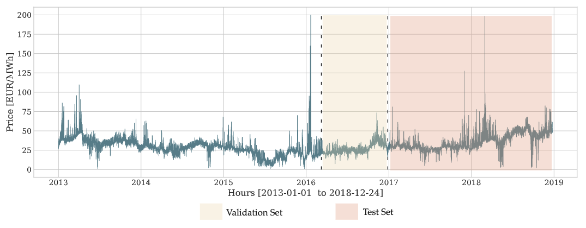

Hyperparameter Optimization
The
BaseAuto class offers shared API connections to hyperparameter optimization algorithms like Optuna, HyperOpt, Dragonfly among others through ray, which gives you access to grid search, bayesian optimization and other state-of-the-art tools like hyperband.Comprehending the impacts of hyperparameters is still a precious skill, as it can help guide the design of informed hyperparameter spaces that are faster to explore automatically.

BaseAuto
BaseAuto (cls_model, h, config, search_alg=<ray.tune.search.basic_variant.BasicVariantGenerator object at 0x7ff85d6dd670>, num_samples=10, cpus=2, gpus=0, refit_with_val=False, verbose=False)
BaseAuto
Class for Automatic Hyperparameter Optimization, it builds on top of ray to give access to a wide variety of hyperparameter optimization tools ranging from classic grid search, to Bayesian optimization and HyperBand algorithm.
The validation loss to be optimized is defined by the config['loss'] dictionary value, the config also contains the rest of the hyperparameter search space.
It is important to note that the success of this hyperparameter optimization heavily relies on a strong correlation between the validation and test periods.
Parameters:
cls_model: PyTorch/PyTorchLightning model, see neuralforecast.models collection here.
h: int, forecast horizon.
config: dict, dictionary with ray.tune defined search space.
search_alg: ray.tune.search variant, BasicVariantGenerator, HyperOptSearch, DragonflySearch, TuneBOHB for details see tune.search.
num_samples: int, number of hyperparameter optimization steps/samples.
cpus: int, number of cpus to use during optimization, default all available.
gpus: int, number of gpus to use during optimization, default all available.
refit_wo_val: bool, number of gpus to use during optimization, default all available.
verbose: bool, wether print partial outputs.
BaseAuto.fit
BaseAuto.fit (dataset, val_size=0, test_size=0)
BaseAuto.fit
Perform the hyperparameter optimization as specified by the BaseAuto configuration dictionary config.
The optimization is performed on the TimeSeriesDataset using temporal cross validation with the validation set that sequentially precedes the test set.
Parameters:
dataset: NeuralForecast’s TimeSeriesDataset see details here
val_size: int, size of temporal validation set (needs to be bigger than 0).
test_size: int, size of temporal test set (default 0).
Returns:
self: fitted instance of BaseAuto with best hyperparameters and results
.
BaseAuto.predict
BaseAuto.predict (dataset, step_size=1, **data_kwargs)
BaseAuto.predict
Predictions of the best performing model on validation.
Parameters:
dataset: NeuralForecast’s TimeSeriesDataset see details here
step_size: int, steps between sequential predictions, (default 1).
**data_kwarg: additional parameters for the dataset module.
Returns:
y_hat: numpy predictions of the NeuralForecast model.
References
- James Bergstra, Remi Bardenet, Yoshua Bengio, and Balazs Kegl (2011). “Algorithms for Hyper-Parameter Optimization”. In: Advances in Neural Information Processing Systems. url: https://proceedings.neurips.cc/paper/2011/file/86e8f7ab32cfd12577bc2619bc635690-Paper.pdf
- Kirthevasan Kandasamy, Karun Raju Vysyaraju, Willie Neiswanger, Biswajit Paria, Christopher R. Collins, Jeff Schneider, Barnabas Poczos, Eric P. Xing (2019). “Tuning Hyperparameters without Grad Students: Scalable and Robust Bayesian Optimisation with Dragonfly”. Journal of Machine Learning Research. url: https://arxiv.org/abs/1903.06694
- Lisha Li, Kevin Jamieson, Giulia DeSalvo, Afshin Rostamizadeh, Ameet Talwalkar (2016). “Hyperband: A Novel Bandit-Based Approach to Hyperparameter Optimization”. Journal of Machine Learning Research. url: https://arxiv.org/abs/1603.06560